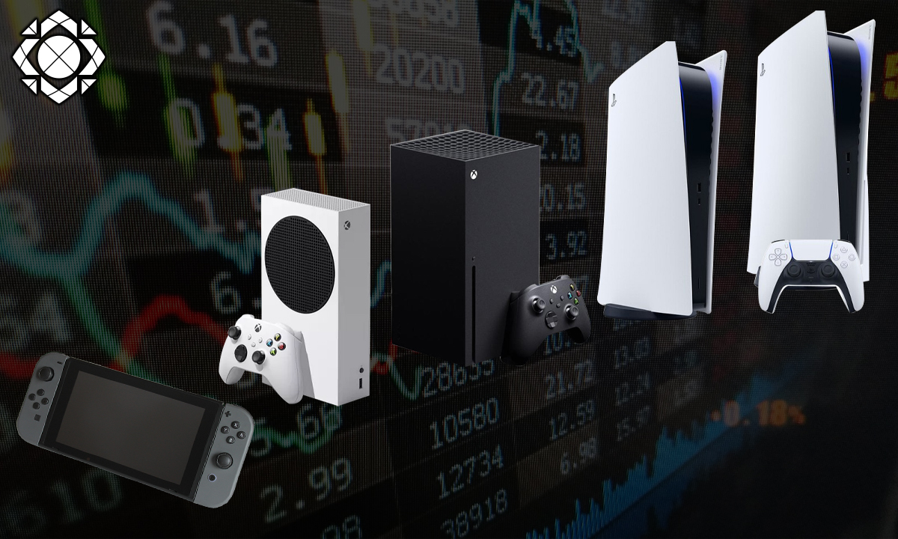
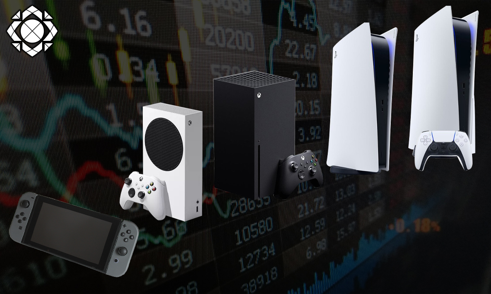

Maximos Representantes
| EDAD | NOMBRE | PAÍS | PLATAFORMA |
|---|---|---|---|
| 33 | El Rubius | Noruega/España | Twitch |
| 30 | Mikecrack | España | Youtube |
| 33 | Veggeta 777 | España | Twitch |
| 24 | Invictor | España | Twitch |
| 24 | El trollino | España | Youtube |
| 22 | The Spreen | Argentina | Twitch |
| 25 | The Gref | España | Twitch |
| 29 | Willyrex | España | Twitch |
| 37 | Itowngameplay | España | Youtube |
| 34 | Auron | España | Twitch |
Consolas
Las consolas de videojuegos son dispositivos electrónicos diseñados específicamente para jugar videojuegos en una pantalla de televisión o en un monitor de computadora. A continuación, se mencionan algunas de las consolas de videojuegos más populares:
- PlayStation: Es una línea de consolas de videojuegos desarrollada por Sony Interactive Entertainment. La primera consola PlayStation fue lanzada en 1994 y desde entonces se han lanzado varias versiones mejoradas, incluyendo la PlayStation 2, PlayStation 3, PlayStation 4 y PlayStation 5.
- Xbox: Es una línea de consolas de videojuegos desarrollada por Microsoft. La primera consola Xbox fue lanzada en 2001 y desde entonces se han lanzado varias versiones mejoradas, incluyendo la Xbox 360, Xbox One y Xbox Series X/S.
- Nintendo: Es una compañía japonesa de videojuegos que ha lanzado varias consolas populares, incluyendo la Nintendo Entertainment System (NES), Super Nintendo Entertainment System (SNES), Nintendo 64, GameCube, Wii, Wii U, Nintendo Switch y varias versiones portátiles, como la Game Boy y la Nintendo DS.
- Sega: Es una compañía japonesa de videojuegos que ha lanzado varias consolas populares, incluyendo la Sega Master System, Sega Genesis, Sega Saturn, Dreamcast y varias versiones portátiles, como la Sega Game Gear.
- Atari: Es una compañía estadounidense que fue pionera en la industria de los videojuegos en la década de 1970 con el lanzamiento de la consola Atari 2600. También lanzaron varias consolas posteriores, como la Atari 5200 y la Atari Jaguar.
 

Plataformas Gaming
Existen muchas plataformas populares para gaming, tanto para juegos de consola como para juegos de PC. A continuación, se mencionan algunas de las plataformas de gaming más populares:
- Steam: Es una plataforma de distribución digital de videojuegos para PC, desarrollada por Valve Corporation. Permite a los usuarios comprar, descargar y jugar videojuegos en línea.
- PlayStation Network (PSN): Es una plataforma de juegos en línea para las consolas PlayStation de Sony. Permite a los usuarios comprar y descargar juegos, así como jugar en línea con otros usuarios.
- Xbox Live: Es una plataforma de juegos en línea para las consolas Xbox de Microsoft. Permite a los usuarios comprar y descargar juegos, así como jugar en línea con otros usuarios.
- Nintendo eShop: Es una plataforma de juegos en línea para las consolas Nintendo. Permite a los usuarios comprar y descargar juegos, así como jugar en línea con otros usuarios.
- Epic Games Store: Es una plataforma de distribución digital de videojuegos para PC, desarrollada por Epic Games. Permite a los usuarios comprar, descargar y jugar videojuegos en línea.
- GOG.com: Es una plataforma de distribución digital de videojuegos para PC, que se enfoca en ofrecer juegos clásicos y DRM-free (sin restricciones de gestión de derechos digitales).
- Origin: Es una plataforma de distribución digital de videojuegos para PC, desarrollada por Electronic Arts. Permite a los usuarios comprar, descargar y jugar videojuegos en línea.

Plataformas Streaming Gaming
- Twitch: Es una plataforma de streaming gaming propiedad de Amazon. Permite a los usuarios transmitir en vivo sus partidas de videojuegos y ver a otros usuarios en vivo.
- YouTube Gaming: Es una plataforma de streaming gaming propiedad de Google. Permite a los usuarios transmitir en vivo sus partidas de videojuegos y ver a otros usuarios en vivo.
- Facebook Gaming: Es una plataforma de streaming gaming propiedad de Facebook. Permite a los usuarios transmitir en vivo sus partidas de videojuegos y ver a otros usuarios en vivo
- Mixer: Era una plataforma de streaming gaming propiedad de Microsoft, pero en 2020 se fusionó con Facebook Gaming.
- Steam Broadcasting: Es una función de Steam que permite a los usuarios transmitir en vivo sus partidas de videojuegos a través de la plataforma de distribución digital de videojuegos Steam.
- Discord: Es una plataforma de comunicación para gamers que también permite a los usuarios transmitir en vivo sus partidas de videojuegos.